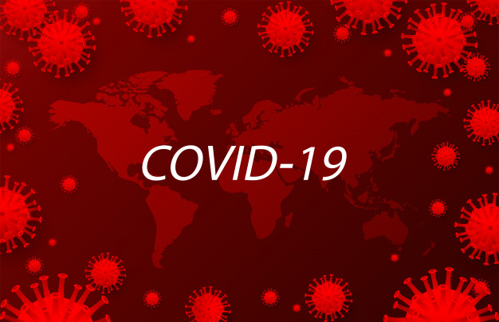
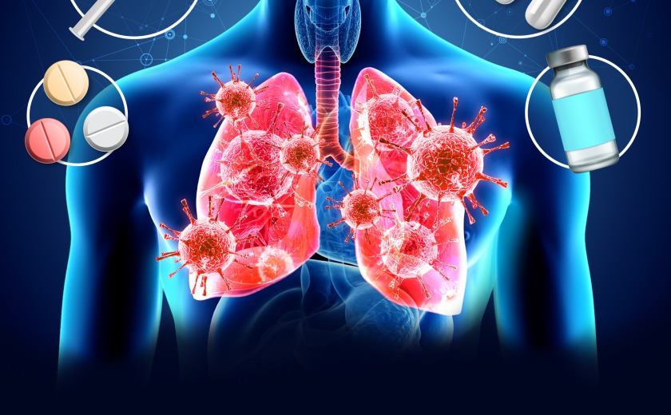

Informações sobre o Covid-19

O que é
Coronavírus é uma família de vírus que causam infecções respiratórias, conhecida desde 1960, mas foi em 1965 que foi descrito como corona vírus. Um novo agente do coronavírus foi identificado em Wuhan, na China, no início de dezembro. Em fevereiro (2020), a transmissão da Covid-19 no Irã e na Itália chamaram a atenção pelo crescimento rápido de novos casos e mortes. No dia 26/02, o primeiro caso do Brasil foi identificado, em São Paulo. Em março (11), a Organização Mundial da Saúde (OMS) definiu o surto da doença como pandemia.

Transmissão
A transmissão do Covid-19 pode ocorrer de duas formas. A transmissão direta é aquela que ocorre de um organismo para o outro, sem necessidade de um veículo para o agente infeccioso. Pode ocorrer por contato físico direto ou por contato com secreção do indivíduo contaminado. E a transmissão indireta que decorre mediante veículos de transmissão. O agente pode ser transmitido por meio de objetos contaminados ou por vetores. Doenças como o Covid-19 são altamente contagiosas. Então, deve-se tomar o máximo de cuidado. O vírus tem diferentes tempos de sobrevivência em diferentes materiais e superfícies. Como por exemplo: ferro - 48 horas a 28 dias, aluminio - 2 a 5 horas, madeira - até 4 dias, vidro - 4 a 5 dias, plástico - 48 horas a 9 dias

Sintomas
Acredita-se que os sintomas aparecem em 2 a 10 dias depois do contato com o vírus. Os sintomas mais comuns são cansaço, tosse seca, febre acima de 37º C e dificuldade de respirar. Outros possíveis sintomas que, geralmente, iniciam leves e evoluem gradualmente são congestão nasal, coriza, dor de garganta e diarreia. Além dos sintomas, a doença pode levar a várias complicações, como agravamento dos quadros respiratórios, cardíacos, sepse, insuficiência renal ou até mesmo morte.
Tratamento
Ainda não há um tratamento específico para combater infecções causadas pelo coronavírus. No entanto, pessoas contaminadas podem seguir algumas recomendações como repouso absoluto, ingestão de muita água, em caso de necessidade consulte um médico sobre quais medicamentos utilizar ou uso de umidificador de ar no quarto ou tomar banhos quentes (auxiliam no alívio da dor de garganta e tosse). O que ajuda a evitar a contaminação é o isolamento social que diminui a progressão de novos casos, possibilitando ao sistema de saúde, comportar os casos mais graves, diminuindo assim, a taxa de letalidade da doença.